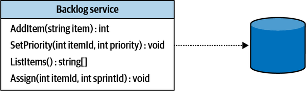
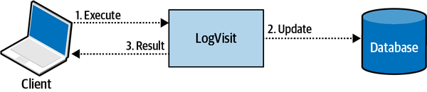
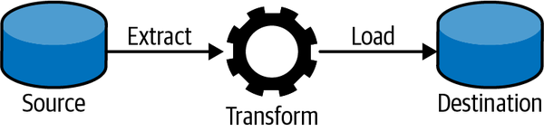
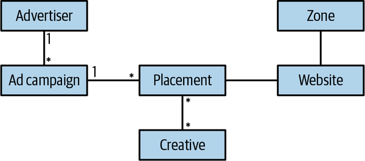

Business logic is the most important part of software. It’s the reason the software is being implemented in the first place. A system’s user interface can be sexy and its database can be blazing fast and scalable. But if the software is not useful for the business, it’s nothing but an expensive technology demo.
As we saw in Chapter 2, not all business subdomains are created equal. Different subdomains have different levels of strategic importance and complexity. This chapter begins our exploration of the different ways to model and implement business logic code. We will start with two patterns suited for rather simple business logic: transaction script and active record.
Organizes business logic by procedures where each procedure handles a single request from the presentation.
Martin Fowler1
A system’s public interface can be seen as a collection of business transactions that consumers can execute, as shown in Figure 5-1. These transactions can retrieve information managed by the system, modify it, or both. The pattern organizes the system’s business logic based on procedures, where each procedure implements an operation that is executed by the system’s consumer via its public interface. In effect, the system’s public operations are used as encapsulation boundaries.

Each procedure is implemented as a simple, straightforward procedural script. It can use a thin abstraction layer for integrating with storage mechanisms, but it is also free to access the databases directly.
The only requirement procedures have to fulfill is transactional behavior. Each operation should either succeed or fail but can never result in an invalid state. Even if execution of a transaction script fails at the most inconvenient moment, the system should remain consistent—either by rolling back any changes it has made up until the failure or by executing compensating actions. The transactional behavior is reflected in the pattern’s name: transaction script.
Here is an example of a transaction script that converts batches of JSON files into XML files:
DB.StartTransaction();varjob=DB.LoadNextJob();varjson=LoadFile(job.Source);varxml=ConvertJsonToXml(json);WriteFile(job.Destination,xml.ToString();DB.MarkJobAsCompleted(job);DB.Commit()
When I introduce the transaction script pattern in my domain-driven design classes, my students often raise their eyebrows, and some even ask, “Is it worth our time? Aren’t we here for the more advanced patterns and techniques?”
The thing is, the transaction script pattern is a foundation for the more advanced business logic implementation patterns you will learn in the forthcoming chapters. Furthermore, despite its apparent simplicity, it is the easiest pattern to get wrong. A considerable number of production issues I have helped to debug and fix, in one way or another, often boiled down to a misimplementation of the transactional behavior of the system’s business logic.
Let’s take a look at three common, real-life examples of data corruption that results from failing to correctly implement a transaction script.
A trivial example of failing to implement transactional behavior is to issue multiple updates without an overarching transaction. Consider the following method that updates a record in the Users table and inserts a record into the VisitsLog table:
01publicclassLogVisit02{03...0405publicvoidExecute(GuiduserId,DataTimevisitedOn)06{07_db.Execute("UPDATE Users SET last_visit=@p1 WHERE user_id=@p2",08visitedOn,userId);09_db.Execute(@"INSERT INTO VisitsLog(user_id, visit_date)10 VALUES(@p1, @p2)",userId,visitedOn);11}12}
If any issue occurs after the record in the Users table was updated (line 7) but before appending the log record on line 9 succeeds, the system will end up in an inconsistent state. The Users table will be updated but no corresponding record will be written to the VisitsLog table. The issue can be due to anything from a network outage to a database timeout or deadlock, or even a crash of the server executing the process.
This can be fixed by introducing a proper transaction encompassing both data changes:
publicclassLogVisit{...publicvoidExecute(GuiduserId,DataTimevisitedOn){try{_db.StartTransaction();_db.Execute(@"UPDATE Users SET last_visit=@p1WHERE user_id=@p2",visitedOn,userId);_db.Execute(@"INSERT INTO VisitsLog(user_id, visit_date)VALUES(@p1, @p2)",userId,visitedOn);_db.Commit();}catch{_db.Rollback();throw;}}}
The fix is easy to implement due to relational databases’ native support of transactions spanning multiple records. Things get more complicated when you have to issue multiple updates in a database that doesn’t support multirecord transactions, or when you are working with multiple storage mechanisms that are impossible to unite in a distributed transaction. Let’s see an example of the latter case.
In modern distributed systems, it’s a common practice to make changes to the data in a database and then notify other components of the system about the changes by publishing messages into a message bus. Consider that in the previous example, instead of logging a visit in a table, we have to publish it to a message bus:
01publicclassLogVisit02{03...0405publicvoidExecute(GuiduserId,DataTimevisitedOn)06{07_db.Execute("UPDATE Users SET last_visit=@p1 WHERE user_id=@p2",08visitedOn,userId);09_messageBus.Publish("VISITS_TOPIC",10new{UserId=userId,VisitDate=visitedOn});11}12}
As in the previous example, any failure occurring after line 7 but before line 9 succeeds will corrupt the system’s state. The Users table will be updated but the other components won’t be notified as publishing to the message bus has failed.
Unfortunately, fixing the issue is not as easy as in the previous example. Distributed transactions spanning multiple storage mechanisms are complex, hard to scale, error prone, and therefore are usually avoided. In Chapter 8, you will learn how to use the CQRS architectural pattern to populate multiple storage mechanisms. In addition, Chapter 9 will introduce the outbox pattern, which enables reliable publishing of messages after committing changes to another database.
Let’s see a more intricate example of improper implementation of transactional behavior.
Consider the following deceptively simple method:
publicclassLogVisit{...publicvoidExecute(GuiduserId){_db.Execute("UPDATE Users SET visits=visits+1 WHERE user_id=@p1",userId);}}
Instead of tracking the last visit date as in the previous examples, this method maintains a counter of visits for each user. Calling the method increases the corresponding counter’s value by 1. All the method does is update one value, in one table, residing in one database. Yet this is still a distributed transaction that can potentially lead to inconsistent state.
This example constitutes a distributed transaction because it communicates information to the databases and the external process that called the method, as demonstrated in Figure 5-2.

LogVisit operation updating the data and notifying the caller of the operation’s success or failureAlthough the execute method is of type void, that is, it doesn’t return any data, it still communicates whether the operation has succeeded or failed: if it failed, the caller will get an exception. What if the method succeeds, but the communication of the result to the caller fails? For example:
If LogVisit is part of a REST service and there is a network outage; or
If both LogVisit and the caller are running in the same process, but the process fails before the caller gets to track successful execution of the LogVisit action?
In both cases, the consumer will assume failure and try calling LogVisit again. Executing the LogVisit logic again will result in an incorrect increase of the counter’s value. Overall, it will be increased by 2 instead of 1. As in the previous two examples, the code fails to implement the transaction script pattern correctly, and inadvertently leads to corrupting the system’s state.
As in the previous example, there is no simple fix for this issue. It all depends on the business domain and its needs. In this specific example, one way to ensure transactional behavior is to make the operation idempotent: that is, leading to the same result even if the operation repeated multiple times.
For example, we can ask the consumer to pass the value of the counter. To supply the counter’s value, the caller will have to read the current value first, increase it locally, and then provide the updated value as a parameter. Even if the operation will be executed multiple times, it won’t change the end result:
publicclassLogVisit{...publicvoidExecute(GuiduserId,longvisits){_db.Execute("UPDATE Users SET visits = @p1 WHERE user_id=@p2",visits,userId);}}
Another way to address such an issue is to use optimistic concurrency control: prior to calling the LogVisit operation, the caller has read the counter’s current value and passed it to LogVisit as a parameter. LogVisit will update the counter’s value only if it equals the one initially read by the caller:
publicclassLogVisit{...publicvoidExecute(GuiduserId,longexpectedVisits){_db.Execute(@"UPDATE Users SET visits=visits+1WHERE user_id=@p1 and visits = @p2",userId,visits);}}
Subsequent executions of LogVisit with the same input parameters won’t change the data, as the WHERE...visits = @p2 condition won’t be fulfilled.
The transaction script pattern is well adapted to the most straightforward problem domains in which the business logic resembles simple procedural operations. For example, in extract-transform-load (ETL) operations, each operation extracts data from a source, applies transformation logic to convert it into another form, and loads the result into the destination store. This process is shown in Figure 5-3.

The transaction script pattern naturally fits supporting subdomains where, by definition, the business logic is simple. It can also be used as an adapter for integration with external systems—for example, generic subdomains, or as a part of an anticorruption layer (more on that in Chapter 9).
The main advantage of the transaction script pattern is its simplicity. It introduces minimal abstractions and minimizes the overhead both in runtime performance and in understanding the business logic. That said, this simplicity is also the pattern’s disadvantage. The more complex the business logic gets, the more it’s prone to duplicate business logic across transactions, and consequently, to result in inconsistent behavior—when the duplicated code goes out of sync. As a result, transaction script should never be used for core subdomains, as this pattern won’t cope with the high complexity of a core subdomain’s business logic.
This simplicity earned the transaction script a dubious reputation. Sometimes the pattern is even treated as an antipattern. After all, if complex business logic is implemented as a transaction script, sooner rather than later it’s going to turn into an unmaintainable, big ball of mud. It should be noted, however, that despite the simplicity, the transaction script pattern is ubiquitous in software development. All the business logic implementation patterns that we will discuss in this and the following chapters, in one way or another, are based on the transaction script pattern.
An object that wraps a row in a database table or view, encapsulates the database access, and adds domain logic on that data.
Martin Fowler2
Like the transaction script pattern, active record supports cases where the business logic is simple. Here, however, the business logic may operate on more complex data structures. For example, instead of flat records, we can have more complicated object trees and hierarchies, as shown in Figure 5-4.

Operating on such data structures via a simple transaction script would result in lots of repetitive code. The mapping of the data to an in-memory representation would be duplicated all over.
Consequently, this pattern uses dedicated objects, known as active records, to represent complicated data structures. Apart from the data structure, these objects also implement data access methods for creating, reading, updating, and deleting records—the so-called CRUD operations. As a result, the active record objects are coupled to an object-relational mapping (ORM) or some other data access framework. The pattern’s name is derived from the fact that each data structure is “active”; that is, it implements data access logic.
As in the previous pattern, the system’s business logic is organized in a transaction script. The difference between the two patterns is that in this case, instead of accessing the database directly, the transaction script manipulates active record objects. When it completes, the operation has to either complete or fail as an atomic transaction:
publicclassCreateUser{...publicvoidExecute(userDetails){try{_db.StartTransaction();varuser=newUser();user.Name=userDetails.Name;user.=userDetails.;user.Save();_db.Commit();}catch{_db.Rollback();throw;}}}
The pattern’s goal is to encapsulate the complexity of mapping the in-memory object to the database’s schema. In addition to being responsible for persistence, the active record objects can contain business logic; for example, validating new values assigned to the fields, or even implementing business-related procedures that manipulate an object’s data. That said, the distinctive feature of an active record object is the separation of data structures and behavior (business logic). Usually, an active record’s fields have public getters and setters that allow external procedures to modify its state.
Because an active record is essentially a transaction script that optimizes access to databases, this pattern can only support relatively simple business logic, such as CRUD operations, which, at most, validate the user’s input.
Accordingly, as in the case of the transaction script pattern, the active record pattern lends itself to supporting subdomains, integration of external solutions for generic subdomains, or model transformation tasks. The difference between the patterns is that active record addresses the complexity of mapping complicated data structures to a database’s schema.
The active record pattern is also known as an anemic domain model antipattern; in other words, an improperly designed domain model. I prefer to restrain from the negative connotation of the words anemic and antipattern. This pattern is a tool. Like any tool, it can solve problems, but it can potentially introduce more harm than good when applied in the wrong context. There is nothing wrong with using active records when the business logic is simple. Furthermore, using a more elaborate pattern when implementing simple business logic will also result in harm by introducing accidental complexity. In the next chapter, you will learn what a domain model is and how it differs from an active record pattern.
It’s important to stress that in this context, active record refers to the design pattern, not the Active Record framework. The pattern name was coined in Patterns of Enterprise Application Architecture by Martin Fowler. The framework came later as one way to implement the pattern. In our context, we are talking about the design pattern and the concepts behind it, not a specific implementation.
Although business data is important and the code we design and build should protect its integrity, there are cases in which a pragmatic approach is more desirable.
Especially at high levels of scale, there are cases when data consistency guarantees can be relaxed. Check whether corrupting the state of one record out of 1 million is really a showstopper for the business and whether it can negatively affect the performance and profitability of the business. For example, let’s assume you are building a system that ingests billions of events per day from IoT devices. Is it a big deal if 0.001% of the events will be duplicated or lost?
As always, there are no universal laws. It all depends on the business domain you are working in. It’s OK to “cut corners” where possible; just make sure you evaluate the risks and business implications.
In this chapter, we covered two patterns for implementing business logic:
The two patterns discussed in this chapter are oriented toward cases of rather simple business logic. In the next chapter, we will turn to more complex business logic and discuss how to tackle the complexity using the domain model pattern.
Which of the discussed patterns should be used for implementing a core subdomain’s business logic?
Transaction script
Active record
Neither the transcription script nor the active record can be used to implement a core subdomain.
Both the transaction script and the active record can be used to implement a core subdomain.
Which of the discussed patterns should be used for implementing a support subdomain’s business logic?
Transaction script.
Active record.
Neither the transaction script nor the active record can be used to implement a core subdomain.
Both the transaction script and the active record can be used to implement a supporting subdomain.
Consider the following code:
01.publicvoidCreateTicket(TicketDatadata)02.{03.varagent=FindLeastBusyAgent();04.05.agent.ActiveTickets=agent.ActiveTickets+1;06.agent.Save();07.08.varticket=newTicket();09.ticket.Id=Guid.New();10.ticket.Data=data;11.ticket.AssignedAgent=agent;12.ticket.Save();13.14._alerts.Send(agent,"You have a new ticket!");15.}
Assuming there is no high-level transaction mechanism, what potential data consistency issues can you spot here? Select all that apply.
On receiving a new ticket, the assigned agent’s counter of active tickets can be increased by more than 1.
An agent’s counter of active tickets can be increased by 1 but the agent won’t get assigned any new tickets.
An agent can get a new ticket but won’t be notified about it.
All of the above issues are possible.
Consider the following code:
01.publicvoidCreateTicket(TicketDatadata)02.{03.varagent=FindLeastBusyAgent();04.05.agent.ActiveTickets=agent.ActiveTickets+1;06.agent.Save();07.08.varticket=newTicket();09.ticket.Id=Guid.New();10.ticket.Data=data;11.ticket.AssignedAgent=agent;12.ticket.Save();13.14._alerts.Send(agent,"You have a new ticket!");15.}
Is there at least one more possible edge case that can corrupt the system’s state?
No
Yes